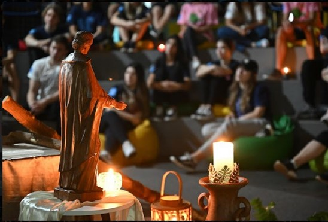

Missão Marista há 10 anos fazendo a diferença
O evento feito pelo grupo Marista que já mudou a vida de muitas pessoas completou seu décimo aniversário em 2023
Em uma entrevista com Aline Querino dos Santos, coordenadora do projeto Pastoral da unidade Marista Social Irmão Acácio, nos relatou os acontecimentos do evento que aconteceu na escola social. O Missão Solidária Marista acontece há dez anos, é um evento feito por todo grupo Marista e de ano em ano escolas do Brasil inteiro participam dessa atividade e dessa vez a nossa escola teve o privilégio de acolher os jovens nessa trajetória, com o objetivo de introduzi-los nas atividades para cultivar a empatia e os aproximar dos valores de Champagnat.
Entre os dias 12 e 16 de julho, 61 alunos de diversas escolas (grupo Marista) do Paraná vieram para a Escola Marista Social Irmão Acácio para realizar atividades de voluntariado juntamente da Pastoral. E como gesto concreto eles pintaram o muro da unidade. A escola acolheu 40 jovens do colégio Santa Maria em Curitiba, 5 do colégio Champagnat de Presidente Prudente, 10 do colégio Marista de Londrina e outros de Cascavel. “Foi uma experiência muito marcante e única conhecer jovens de outras realidades e ver a imersão deles durante a Missão”, disse a Aline sobre o evento. Ao decorrer da Missão Marista os voluntários participaram de oficinas em que eles discutiam sobre temáticas como direito a educação de qualidade, direito a cultura e direito à alimentação, que contou com uma ação feita na horta.
Além das oficinas os jovens visitaram casas e famílias para falar sobre a escola e como o mundo poderia ser mais sustentável. Uma dessas visitas ocorreu no Flores do Campo, eles tiveram a chance de conhecer histórias emocionantes e ter contato com uma realidade totalmente diferente. O Missão Marista trabalhou bastante a questão da espiritualidade, atividades assim foram marcantes estiveram muito presentes. O evento, além dos estudantes de outras escolas, contou com a presença de colaboradores e funcionários aqui da escola. Quatro dias de diversão e aprendizado que com certeza ficará marcado para nossa escola.
“Aline, qual é a sua Missão dentro do Marista?”
“Eu acho que, principalmente, proporcionar uma escola pastoral, que é onde todas as pessoas consigam se relacionar bem, que cada um tenha sua espiritualidade, a sua diversidade. Que a gente trabalhe em uma diversidade grande, mas consiga alcançar todos os alunos, é trabalhar para que todos os alunos tenham seus direitos garantidos e assim diminuir as violações de direitos”
Data da Publicação: setembro de 2023